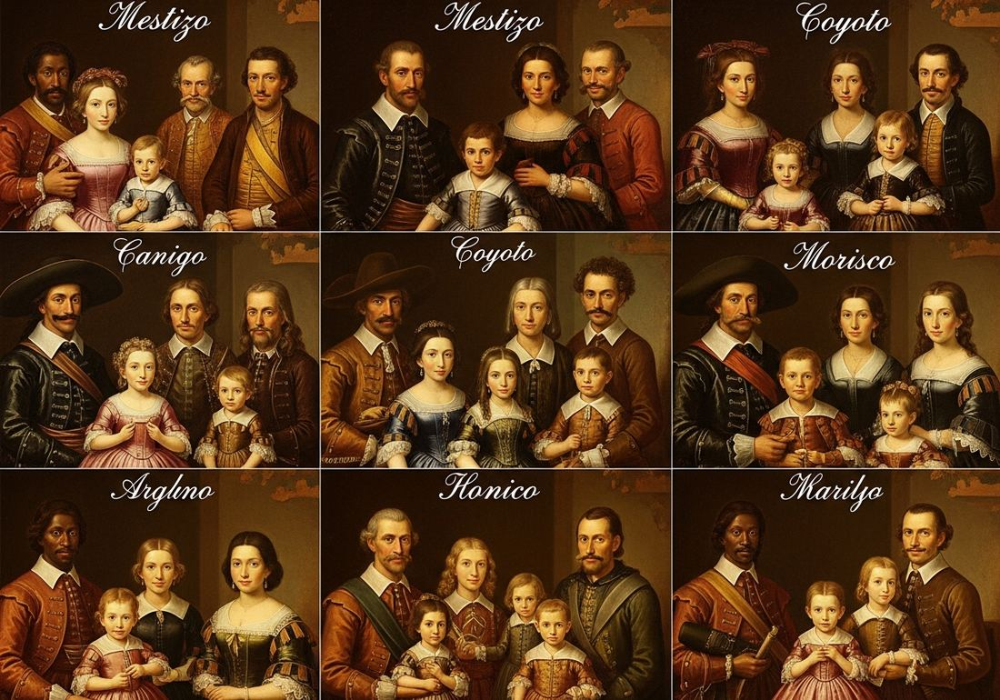

4.7 Changing Social Hierarchies from 1450 to 1750
- LO-A: New racial hierarchies in the Americas: Spanish colonialism in the Americas created an explicit racial classification system called the casta system, which ranked people by their mix of European, indigenous, and African ancestry. At the top were peninsulares (born in Spain); then criollos/creoles (Spanish descent, born in Americas); then a complex grid of racial mixtures (mestizo, mulato, etc.) extending down to indigenous people and enslaved Africans. This was the first formal racial hierarchy in world history to classify people by ancestry. Qing Dynasty and Han Chinese: The Qing conquest of China (1644) brought Manchu rulers to power over a Han Chinese majority. The Qing imposed cultural markers to maintain Manchu identity and political dominance: Han men were required to shave the front of their heads and wear a Manchu-style queue (braid) on pain of death. The Qing simultaneously courted Han elite cooperation through the examination system while maintaining ethnic boundaries. This created a new political hierarchy with ethnic dimensions. Ottoman and Mughal accommodation of diversity: Contrasting with Spanish and Qing approaches, the Ottoman and Mughal empires developed policies of relative religious and ethnic inclusion. The Ottoman millet system allowed religious minorities (Jews, Christians) to govern their own communities under their own religious law. The Mughal Emperor Akbar (r. 1556–1605) abolished the jizya tax on non-Muslims, promoted Hindu officials to high positions, and attempted to create a syncretic court culture. When Spain expelled Jews and Muslims in 1492–1502, the Ottoman Empire actively welcomed them, the Ottoman Sultan reportedly saying "you call Ferdinand a wise king, but he is impoverishing his country and enriching mine." Existing elites under pressure: It's worth noting that "the power of existing political and economic elites fluctuated" as they confronted "new challenges" from increasingly powerful monarchs. European nobles lost power to centralizing monarchs (Louis XIV removed French noble autonomy; the Fronde failed). Ottoman timars (land grants to warrior-administrators) were eroded by Ottoman sultans centralizing revenue. The growth of merchant wealth in Europe created new economic elites who competed with hereditary nobility.
Try each question before revealing the answer.
1. The Spanish casta system in colonial Americas was a formal racial classification system. Why would a colonial government create an explicit racial hierarchy rather than relying on the informal social hierarchies that existed in Spain?
2. The Qing Dynasty required Han Chinese men to adopt the Manchu queue (shaved forehead + braid). Why would a conquering dynasty care about a haircut? What was the political function of this requirement?
3. When Spain expelled Jews and Muslims in 1492 (Jews) and 1502 (Muslims), the Ottoman Empire sent ships to actively bring them to Ottoman territory. The Ottoman Sultan Bayezid II reportedly said: "You call Ferdinand a wise king, but he is impoverishing his country and enriching mine." What does this comparison between Spanish and Ottoman religious policies reveal about different theories of state power?
4. Mughal Emperor Akbar (r. 1556–1605) abolished the jizya tax on non-Muslims, appointed Hindu officials to high positions, and patronized artists from multiple religious traditions. His successors, especially Aurangzeb (r. 1658–1707), reversed many of these policies, reinstating the jizya and destroying Hindu temples. What does this reversal reveal about the relationship between a ruler's personal choices and the political sustainability of minority accommodation policies?
5. In colonial Spanish America, a criollo (person of Spanish descent born in the Americas) and a peninsular (person born in Spain) might be identical in race, religion, and family background, but the peninsular had higher legal status. Why would birthplace, independent of ancestry, create a hierarchical distinction?
- Describe the formation and transformation of social hierarchies from 1450 to 1750, including the creation of new hierarchies and changes to existing ones
Tap a term for its definition.
-
Definition: A formal racial classification system in Spanish colonial Americas that categorized people by their mix of European (Spanish), indigenous, and African ancestry, assigning different legal rights, tax obligations, and social positions to each category. Significance: the first institutionalized racial classification system in world history; created enduring racial hierarchies across Latin America that persisted long after Spanish colonial rule ended.
-
Definition: In the Spanish colonial casta system, people born in Spain (the Iberian "peninsula") who resided in the Americas; the highest social and legal status. Significance: Reserved the most important colonial offices; criollo resentment of peninsular privilege was a major driver of Latin American independence movements in the early 19th century.
-
Definition: In the Spanish colonial casta system, a person of full or near-full Spanish ancestry born in the Americas; below peninsulares in legal status despite identical ancestry. Significance: Eventually formed the leadership class of Latin American independence movements; demonstrates that the colonial hierarchy was based partly on birthplace (not just race) as a tool of political control.
-
Definition: In the casta system, a person of mixed Spanish and indigenous ancestry. Significance: The largest single population category in most of colonial Spanish America by the 18th century; their legal and social position was intermediate and ambiguous, better than indigenous or enslaved Africans, worse than criollos and peninsulares.
-
Definition: The Ottoman administrative system allowing recognized religious minorities (Christians, Jews) to govern themselves under their own religious law in matters of personal status (marriage, inheritance, education), with their own courts and communal leadership. Significance: The Ottoman model of minority accommodation; allowed non-Muslims to participate in Ottoman commercial and intellectual life while maintaining communal autonomy; stands in contrast to Spanish religious exclusion policies.
-
Definition: A per-capita tax levied on non-Muslim subjects in Islamic states in exchange for protection and exemption from military service. Significance: Central to debates about religious policy in the Mughal Empire; Akbar abolished it (1564) as part of his inclusive policy toward Hindu subjects; Aurangzeb reinstated it (1679) as part of his more orthodox Islamic policy, contributing to Hindu-Muslim political tensions that weakened the Mughal Empire.
-
Definition: The hairstyle mandated by the Qing Dynasty for Han Chinese men: the front of the head shaved and the remaining hair braided into a long queue (braid). Significance: A symbol of Qing political domination; required of all Han men on pain of death ("lose your hair or lose your head"); its cutting became a revolutionary symbol when the Qing Dynasty fell in 1912.
-
Definition: The greatest of the Mughal emperors, known for his policies of religious tolerance and administrative inclusion of non-Muslim subjects. Significance: AP exam illustrative example of Mughal accommodation of diverse populations; abolished the jizya, appointed Rajput Hindu nobles to high military command, patronized artists from multiple traditions, and developed the syncretic Din-i-Ilahi philosophy.
🌎 New Racial Hierarchies in Colonial Americas
The Spanish colonial project in the Americas created something new in world history: a formal, legally institutionalized hierarchy based on racial ancestry. The casta system emerged in the 16th–17th centuries as Spanish colonizers, their indigenous subjects, and enslaved Africans interacted in ways that produced a large mixed-ancestry population whose social position was legally ambiguous.
The casta system had practical legal consequences: different castas paid different taxes, could hold different offices, and had different legal rights. In theory it was based on ancestry; in practice, it was also based on wealth, cultural performance (dress, language, occupation), and social recognition. Wealthy mestizos could sometimes "pass" as criollos; poor criollos might be treated as mestizos. The system was both rigid (in its legal categories) and flexible (in its social application).

Image credit not specified.
A pintura de castas (casta painting) from colonial New Spain, each panel shows a father, mother, and child with their legal racial classification labeled. Spanish colonial administrators used these images to document and enforce racial categories. Over 100 named casta designations were eventually codified. AI-generated illustration (Google Gemini, 2025), commercially licensed.
🐉 The Qing Dynasty: Ethnic Hierarchy in China
When the Manchu Qing Dynasty conquered China in 1644, it faced a fundamental problem: how to rule a Han Chinese population of approximately 100–150 million people with a Manchu population of only a few million. The solution involved a carefully calibrated combination of coercive cultural imposition and deliberate elite inclusion.
The most famous coercive measure was the queue order: all Han Chinese men were required to shave the front of their heads and wear their remaining hair in a Manchu-style braid (queue). The penalty for refusal was execution, "lose your hair or lose your head" as contemporaries put it. The queue requirement had a precise political function: it forced a daily, visible, public display of Manchu political submission. You couldn't be a secret resistor if everyone could see you were complying.
At the same time, the Qing carefully incorporated Han Chinese elites into the governance structure. The traditional Confucian examination system, which had produced the Han elite for centuries, was maintained. Han Chinese officials were appointed to high positions in the bureaucracy, often paired with Manchu co-administrators. The Qing emperors became sophisticated students of Chinese culture, patronizing Han art, literature, and scholarship.
The result was a hierarchy with ethnic dimensions but ruled through inclusion: Manchu political dominance was maintained through military control and the banner system (Manchu military organization), while Han elites were brought into governance through the examination system in ways that required their cooperation without granting them ultimate power.
🕌 Ottoman and Mughal Accommodation of Diversity
The Ottoman and Mughal empires ruled over profoundly diverse populations, the Ottomans over Christians, Jews, and Muslims of dozens of ethnicities; the Mughals over a Hindu majority with Muslim rulers and a diverse array of other groups. Both empires developed policies of relative accommodation rather than forced homogeneity.
The Ottoman millet system was the most institutionalized approach. Under this system, recognized religious communities (millets: Christians, Jews, and Armenian Christians as separate millets) could govern themselves under their own religious law in matters of personal status, marriage, divorce, inheritance, education. Each millet had its own courts, its own leadership structure (the Patriarch for Orthodox Christians, the Chief Rabbi for Jews), and its own communal institutions. Non-Muslims paid the jizya tax but were otherwise largely autonomous within their communities.
When Spain expelled its Jewish population in 1492 and its Muslim population in 1502, the Ottoman Empire actively recruited these refugees. Sultan Bayezid II sent ships to Spain to bring expelled Jews to the Ottoman Empire, reportedly commenting that Ferdinand was "impoverishing his country and enriching mine." The Ottoman cities of Istanbul, Salonica (Thessaloniki), and Izmir became home to large Sephardic Jewish communities that brought commercial networks, craft skills (especially in textile production), and medical knowledge to the Empire.
The College Board specifically identifies the "varying status of different classes of women within the Ottoman Empire" as an illustrative example of social hierarchy in this period. Ottoman women's lives differed enormously depending on class, religion, and family position:
- Elite Muslim women in the imperial harem could wield significant political influence, especially during the 16th–17th century "Sultanate of Women", a period when powerful women such as Hürrem Sultan (wife of Suleiman the Magnificent) and Kösem Sultan (mother of two sultans) effectively governed the empire through their influence over their husbands or sons. These women controlled patronage networks, issued orders to governors, and shaped foreign policy.
- Urban Muslim women of middling and merchant families had more restricted public roles but had legal rights under Islamic law: they could own property in their own names, initiate divorce under certain conditions, and bring legal cases independently. The Ottoman court records show women actively using the legal system to defend their interests.
- Rural and peasant women, the large majority, worked alongside men in agricultural production, with fewer formal legal protections and little political visibility.
- Non-Muslim women (Christian and Jewish) operated under their millet's own religious law (which varied by community) rather than Ottoman Islamic law, meaning their status depended on which religious community they belonged to, not on Ottoman imperial policy directly.
The Mughal approach to diversity reached its highest expression under Emperor Akbar (r. 1556–1605). Akbar abolished the jizya tax on non-Muslims (1564), appointed Rajput Hindu nobles to some of the highest positions in his military and civil administration, patronized Hindu and Jain scholars alongside Muslim ones, and personally explored a syncretic philosophy (Din-i-Ilahi) that drew on Islam, Hinduism, Zoroastrianism, and other traditions. His court was deliberately multi-confessional as a signal of his empire's inclusive character.
This accommodation was not unlimited altruism. It was also strategic. Mughal control of India depended on cooperation from the Rajput Hindu warrior nobility who controlled large territories in Rajasthan and elsewhere. Without Rajput military cooperation, Mughal rule was precarious. Akbar's accommodation was as much practical power politics as personal religious open-mindedness.
📉 Existing Elites Under Pressure
The College Board notes that "the power of existing political and economic elites fluctuated" in this period. This is true across multiple regions:
- European nobility: Centralizing monarchs, Louis XIV in France, the Habsburg emperors in Austria, the Romanovs in Russia, systematically reduced noble autonomy. The French nobility lost independent military commands and governing authority; English nobles faced parliamentary constraints on their power. The Fronde's failure (Topic 4.6) was in part a story of noble power being permanently curtailed by the French monarchy.
- Russian boyars: The boyars, Russia's hereditary landowning nobility, saw their independent power dramatically curtailed under Ivan the Terrible (r. 1547–1584) and then Peter the Great (r. 1682–1725). Ivan created the oprichnina, a state-within-a-state whose agents terrorized and executed boyars he suspected of disloyalty. Peter later required all nobles to serve the state in military or civil roles, and his Table of Ranks (1722) made advancement dependent on merit and service to the tsar rather than hereditary status, undermining the boyars' claim to power based purely on birth.
- Ottoman timar holders: Ottoman warrior-administrators (sipahis) had traditionally held land grants (timars) that gave them local power and income in exchange for military service. As the Ottomans shifted to mercenary armies and centralized tax farming in the 17th century, the timar system eroded, undermining the traditional military-administrative elite's power base.
- New merchant elites: The expansion of long-distance commerce, especially in Europe and China, created wealthy merchant families who acquired economic power that competed with hereditary noble prestige. In the Dutch Republic, merchant elites effectively governed; in England, merchant and gentry families increasingly penetrated Parliament. Economic success created new elites alongside (and sometimes above) traditional hereditary ones.
These videos will help you review Changing Social Hierarchies from 1450 to 1750 and solidify key concepts before your exam.
- A) The development of a formal racial classification system used to assign legal status and social position in colonial Spanish America
- B) Spanish colonial culture's celebration of racial diversity in the Americas
- C) The unsuccessful attempt by Spanish officials to prevent racial mixing in colonial society
- D) The influence of indigenous artistic traditions on Spanish colonial painting
- A) The Manchu desire to eliminate Han Chinese cultural traditions through forced assimilation
- B) The use of visible cultural markers to enforce political submission in a society governed by a conquering minority
- C) The Qing Dynasty's policy of sharing political power equally with Han Chinese subjects
- D) The relationship between personal appearance and social status in traditional Chinese culture
- A) Ottoman military competition with Spain for influence over the Mediterranean world
- B) The Ottoman government's deliberate effort to weaken Spain by absorbing its expelled population
- C) How Ottoman policies of accommodation of religious minorities contrasted with Spanish policies of exclusion, producing different economic and social outcomes
- D) The role of Jewish merchants in establishing Ottoman control over Mediterranean trade routes
- A) The conversion of Hindu and Zoroastrian subjects to Islam as a tool of Mughal political unification
- B) The Mughal Empire's adoption of a secular constitutional framework modeled on European political theory
- C) The decline of traditional Islamic scholarship under Mughal patronage of non-Muslim traditions
- D) How the Mughal Empire accommodated the diversity of its subjects to maintain political stability in a multi-religious empire
- A) How the power of existing elites fluctuated as they confronted increasingly powerful centralizing monarchs
- B) The elimination of the French nobility as a social class through Louis XIV's reform policies
- C) The French nobility's voluntary surrender of political power in exchange for ceremonial privileges at Versailles
- D) The creation of a new noble hierarchy based on merit and royal service rather than hereditary birth
Answer all three parts.
Part A
Explain how the Spanish colonial casta system created new social hierarchies in the Americas in the period 1450–1750.
Part B
Compare the Ottoman and Spanish policies toward religious minorities in the period 1450–1750, explaining ONE key difference.
Part C
Explain ONE way the power of existing elites changed in the period 1450–1750.
Consider both the creation of new hierarchies (casta system, Qing ethnic hierarchy) and changes to existing ones (European nobility; Ottoman elites). Consider what continuities persisted as well.